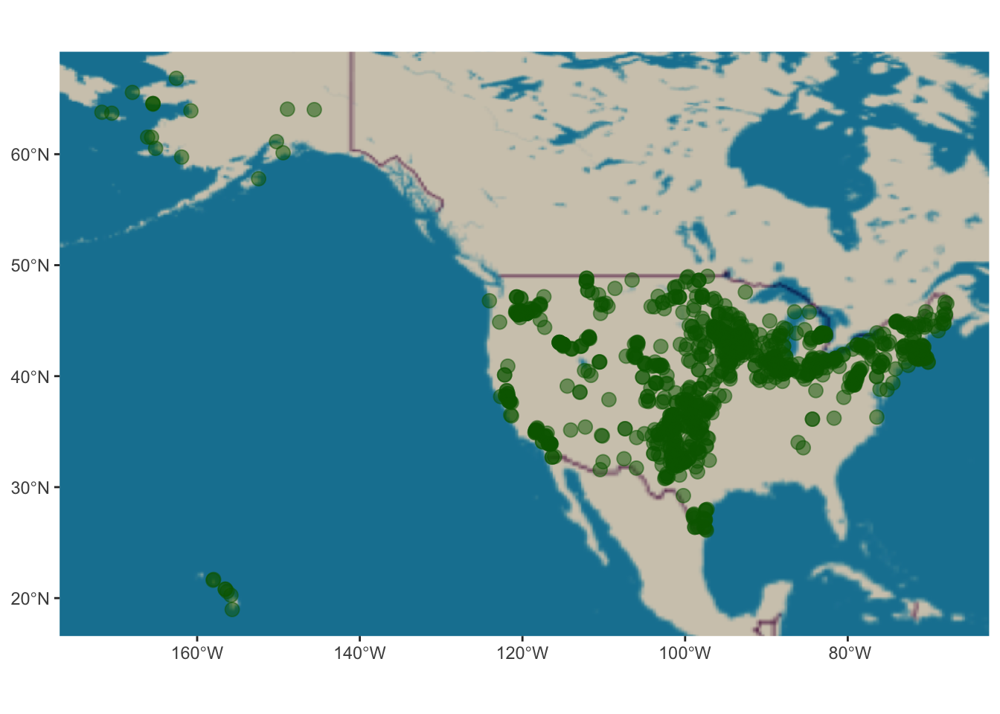
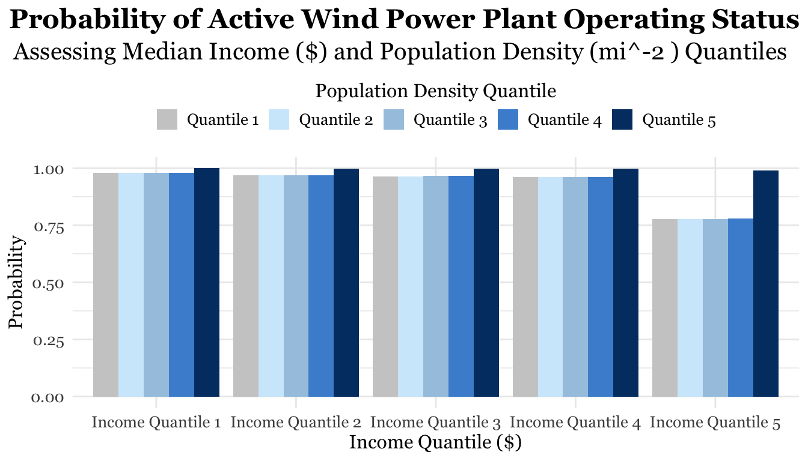

Population Density: Effect: A unit increase in population density is associated with a slight increase in the odds of having an operational wind plant. This suggests that areas with higher population densities are marginally more likely to host wind plants and less likely to experience minority holder opinions taking the majority.
Median Income: Effect: An increase in median income is linked to a decrease in the odds of having an operational wind plant. Higher income areas show a lower likelihood of wind plant activity, potentially due to different local priorities or economic factors. Uneven socio-economic power-dynamics could lead to minority opinion holders preventing the development of wind power infrastructure, alongside other renewable energy solutions.
Anti-Wind Infrastructure Opinion: Effect: Areas with higher opposition to wind infrastructure are less likely to have operational wind plants. This aligns with expectations that local opposition impacts the establishment of wind plants.
Overview
The phenomenon of Spatial Distorted Signalling (SDS) describes the mobilization of minority opinion holders pushing back electorally and promote legislation that aligns with their beliefs. Leah Stokes (et.al) has explored the SDS phenomenon as a natural experiment in her piece, Electoral Backlash against Climate Policy: A Natural Experiment on Retrospective Voting and Local Resistance to Public Policy (2016). The findings in this paper describe that rural Canadian communities had a greater ability to mobilize and organize political push back against majority chair holders in parliament after the passing of legislation which invited the development of wind infrastructure through incentives.
Since then, Leah has navigated the nuances of varying percentiles in races, political affiliation (particularly the % precinct gop voting share), the scale and size of the project, as well as, the volume of local mobilization in her research, Replication Data for: Prevalence and predictors of wind energy opposition in North America (2023).
I am hoping to reproduce these naturally observed outcomes with the US Wind Data and assess the relationship of population density and the project status of wind plants. Analysis of these relationships could provide insight into understanding the scaling effect that local resistance has on spatially distorted signalling in relation to wind infrastructure projects and and sustainable climate policy.
Techniques Applied
Single & Multivariate Logit Regression Models
Logit & Log Odds
Predictive Probability
Ethical Critiques: Addressing Limitations
Limitations
Considering Omitted Variable Bias (OVB)
Neglecting additional variables without testing is improper practice. Exogeneity is a very difficult OLS assumption to uphold – alongside a normal distribution of the error mean. A means to determine relationships between variables is running various linear regression models and comparing the \(R^2\) value. In this project, we focus our attention on the why OLS was not the analysis method of choice for our relationships of interest. In the instance of logistic regression, a log odds ratio must be taken to interpret each individual variable. There is a strong possibility that the models utilized in this project are not exogenous and require deeper analysis to determine the impact of underlining influences.
Insufficient Data
The data set may not fully capture all relevant factors affecting wind plant activity, such as specific local policies or environmental conditions.
The data source that was utilized in this project, US Wind Data, focuses on the public stance on wind infrastructure for census tract regions within a 3 km buffer zone of a wind infrastructure project. It contains categorical variables, binary variables, continuous socioeconomic factors such as % of races, % precinct political gop affiliated voting share, mobilization tactics, and more. This data is associated with the Replication Data for: Prevalence and predictors of wind energy opposition in North America, doi Harvard Dataverse, V1, 2023. The collaborators on that project include: Stokes, Leah; Franzblau, Emma; Lovering, Jessica R.; Miljanich, Chris. Leah Stokes and her awesome team gathered all of this information from American Wind Association (“awea”), operational, Columbia Sabin Center (“Columbia”).
Variables of Interest:
Name
Description
status
Describes the project operating status. In this study, we have converted it into a binary variable: 1 is operating, 0 is not_operating.
pop_den
Tract-level 2010 census data for population density (per mi^2)
med_inc
Tract-level 2010 census data for median income ($)
is_anti_wind
Binary measure of wind opposition: 1 is against wind power developments, 0 is pro wind power developments.
Data Citation
{1. Stokes, Leah; Franzblau, Emma; Lovering, Jessica R.; Miljanich, Chris. "Replication Data for: Prevalence and predictors of wind energy opposition in North America", https://doi.org/10.7910/DVN/LE2V0R, Harvard Dataverse, V1, 2023.}
Loading Libraries
The following libraries were selected based on their functionality and ability to optimize our data for mapping.
Below we will use the package sf to convert the lat/long vector data into a raster geometry column. In this single line, we will also be assigning the CRS EPSG:4326 to the sf data frame. Coordinate Reference Systems, CRS, are required in order for the data to be projected onto a map. The CRS was selected because it provides a relatively proportionate display of the United States. We are open to suggestions regarding our CRS if a different project better fits our data.
U.S. Wind Data
Code
#~~~~~~~~~~~~~~~~~~~~~~~~~~~~~~~~~~~~# ---- Read & Raster ----#~~~~~~~~~~~~~~~~~~~~~~~~~~~~~~~~~~~~# reading in & storing datawind_data <-read.csv("../data/wind_data/wind_data_usa.csv") # Confirm the Data Loaded Properly#head(wind_data) # displays the first 6 rows of the data# Let's read in our datawind_sf <- wind_data %>%# creates geometry column with desired crs st_as_sf(coords =c("longitude", "latitude"), crs =4326) # quick CRS check#glimpse(crs(wind_sf)) # output should reveal WGS84, EPSG:4326#~~~~~~~~~~~~~~~~~~~~~~~~~~~~~~~~~~~~# ---- Check Point! ----#~~~~~~~~~~~~~~~~~~~~~~~~~~~~~~~~~~~~# Let's stop and see if our outputs are what we expect.# Were the lat/long columns correctly converted into a geometry column?# setdiff() is a way to quickly determine the differences between two data sets.# Sweet! we are looking good#setdiff(colnames(wind_sf), colnames(wind_data))
Mapping Wind Power Infrastructure Plants in the U.S.
Before diving in, let’s get a sense of where we’ll be investigating. Using `ggplot()`, we can visualize the locations of wind infrastructure power plants throughout the United States. To achieve a more granular map, we’ll need to utilize another data set to create a base layer for our map in order to observe these wind plants with respect to state and county jurisdictions.
Code
# First visual of the U.S. wind data provided by the geometry pointswind_plants <-ggplot(wind_sf) +annotation_map_tile(type ="osm") +geom_sf(col ='darkgreen',alpha =0.5,size =3)wind_plants

Determining the Process
We will employ a series of models to describe the effect of census tract level population density on the operating status of wind power infrastructure. A combination of binary and interaction logit regression will be considered.
The initial model will apply OLS regression, this is really a formality to demonstrate why OLS is not the correct approach for interpreting our relationships of interest. The following will be a model with two continuous variables
Regression Model Components
Binary Indicator Variable will be status column: opertating is 1, and not_operating will be 0.
These variables focus more on regionally dependent factors that intuitively seem to have an impact on mobilization variables that we don’t have time to cover in this project. We’ll be working with a mix of discrete and continuous data, so there some wrangling will be necessary to run the regressions we’re interested in.
Code
#~~~~~~~~~~~~~~~~~~~~~~~~~~~~~~~~~~~~# ---- Inspect & Standarize Data ----#~~~~~~~~~~~~~~~~~~~~~~~~~~~~~~~~~~~~# Determining Variable Assignments for OLS#unique(wind_sf$status) # displays unique values in this# Need to rename status output variables# creating two categories: operating & not_operating# We are removing 'Operating | Decommissioned' because it skews the dataunwanted_status <-"Operating | Decommissioned"replacement_status <-"Uncertain Status"wind_sf$status[wind_sf$status== unwanted_status]<-"Uncertain Status"# were we successful ?#unique(wind_sf$status) # displays unique values in this# cleaning out NAs for OLSwind_sf <- wind_sf %>%filter(is.na(status) =='FALSE') %>%filter(is.na(is_anti_wind) =='FALSE') %>%filter(is.na(pop_den) =='FALSE') %>%filter(is.na(med_inc) =='FALSE') %>%filter(is.na(median_age) =='FALSE') %>%filter(is.na(n_turbs) =='FALSE')# were we successful ?#unique(wind_sf$status) # displays unique values in this# if_else preserves the data type but replaces unwanted valueswind_us <- wind_sf %>%mutate(status =if_else( status %in%c('Cancelled', 'Out of service (temporarily)', 'Standby', 'Decommissioned', 'Uncertain Status'), 'not_operating','operating') )# are our only outputs "operating" and "not_operating"?#print(unique(wind_us$status))# status as factor and reassigned valueswind_us <- wind_us %>%mutate(status =case_when(status =="operating"~1, status =="not_operating"~0))
Check Point!
Does the binary variable contain only 0s or 1s?
Code
#~~~~~~~~~~~~~~~~~~~~~~~~~~~~~~~~~~~~# ---- Check point! ----#~~~~~~~~~~~~~~~~~~~~~~~~~~~~~~~~~~~~# are our only outputs 0 or 1?print(unique(wind_us$status))
[1] 1 0
Visualizing the Categorical Response Variable Across a Distribution
Before jumping into any analysis, it’s important to get a sense of how the data is distributed and if there are any underlying trends or biases. The two visual aids we’re going to create are a violin plot with jitter points (left) and a comparative regression plot using OLS and GLM (right). Combining two figures provides us fuller insights into both the general trend and changes in probability of the binary outcome for the population density predictor.
The visualizations display the majority of the distribution lies within the actively operating wind infrastructure plants. A trend of inactive plants and lower population density is notable in both figures. Collectively they demonstrate smaller population densities contain more inactive wind infrastructure plants. This could be attributed to with weight of a singular vote in regions with smaller demographics.
Local mobilization of minority opinion holders in these regions have a greater availability to push back against policymakers. However, this visual does not encapsulate all of the necessary information required to determine this with full certainty. Our data set has low availability for non-operating infrastructure and as such, in the regression figure on the right these are being treated as outliers.
Code
#~~~~~~~~~~~~~~~~~~~~~~~~~~~~~~~~~~~~~~~~~~~~~~~~~# ---- Violin Distribution ----#~~~~~~~~~~~~~~~~~~~~~~~~~~~~~~~~~~~~~~~~~~~~~~~~~# Create the violin plot with log scaledensity_plot <-ggplot(data = wind_us, aes(x =factor(status), y = pop_den, fill =factor(status))) +geom_violin(alpha =0.6, color ="darkblue") +geom_jitter(col ="#F84C0B",width =0,height =0.05,alpha =0.35,size =4) +labs(title ="Population Density vs Wind Power Plant Operating Status",subtitle="Logorithimic Distribution",x ="Activation Status",y =expression("Population Density (Log Scale, "~ mi^-2~")")) +# rename x-axis labels for clarityscale_x_discrete(labels =c("0"="Inactive", "1"="Active")) +# Apply logarithmic scale to y-axisscale_y_log10() +theme_538() +scale_fill_manual(values =c("skyblue", "darkblue")) +# Adjust title font and alignmenttheme(plot.title =element_text(size =40,family ="Georgia", face ="bold",hjust = .99,color ="#293F2C"), # Adjust subtitle font and alignmentplot.subtitle =element_text(size =38,family ="Georgia",color ="#293F2C",hjust =0.5), axis.title =element_text(size =36,family ="Georgia",color ="#293F2C"),axis.text =element_text(size =34,family ="Georgia",color ="#293F2C"),# Move legend to the bottomlegend.position ="top", # Remove legend title if not neededlegend.title =element_blank(), # Adjust legend text sizelegend.text =element_text(size =34,family ="Georgia",color ="#293F2C"), # Background color for legendlegend.key =element_rect(fill ="grey94", color ="grey94"), plot.background =element_rect(fill ="#FDFBF7") ) +coord_flip()#~~~~~~~~~~~~~~~~~~~~~~~~~~~~~~~~~~~~~~~~~~~~~~~~~# ---- Jitter OLS + GLM ----#~~~~~~~~~~~~~~~~~~~~~~~~~~~~~~~~~~~~~~~~~~~~~~~~~# Optimized jitter plot with smooth linesjitter_plot_optimized <-ggplot(data = wind_us, aes(x = pop_den, y = status)) +# assign color to legend geom_jitter(aes(color ="Data Points"),width =0,height =0.05,alpha =0.6,size =4) +# Adjusted size for better visibilitygeom_smooth(method ="lm",se =FALSE,aes(color ="OLS Line"),size =1.2, # Slightly thicker line for visibilitylinetype ="solid") +geom_smooth(method ="glm",se = T,aes(color ="GLM Line"),size =1.2,linetype ="dashed",method.args =list(family ="binomial")) +labs(title ="Population Density vs Wind Power Plant Operating Status",subtitle="Logorithimic Distribution Regression Comparison",y ="Activation Status",x =expression("Population Density (Log Scale, "~ mi^-2~")")) +# rename yaxis labels for clarityscale_y_continuous(breaks =c(0, 1),labels =c("0"="Inactive", "1"="Active")) +scale_x_log10() +theme_538() +# Adjust title font and alignmenttheme(plot.title =element_text(size =40,family ="Georgia", face ="bold",hjust = .99,color ="#293F2C"), # Adjust subtitle font and alignmentplot.subtitle =element_text(size =38,family ="Georgia",hjust =0.5,color ="#293F2C"), axis.title =element_text(size =36,family ="Georgia",color ="#293F2C"),axis.text =element_text(size =34,family ="Georgia",color ="#293F2C"),# Move legend to the bottomlegend.position ="top", # Remove legend title if not neededlegend.title =element_blank(), # Adjust legend text sizelegend.text =element_text(size =34,family ="Georgia",color ="#293F2C"), # Background color for legendlegend.key =element_rect(fill ="grey94", color ="grey94"), plot.background =element_rect(fill ="#FDFBF7") ) +scale_color_manual(name ="Legend", # Title for the legendvalues =c("Data Points"="#F84C0B", "OLS Line"="blue", "GLM Line"="skyblue"),labels =c("Data Points"="Data Points", "OLS Line"="OLS Line", "GLM Line"="GLM Line"))# Combine plots horizontallycombined_plot <- density_plot + jitter_plot_optimized +# Arrange plots side-by-sideplot_layout(ncol =2) combined_plot
In Table 2, the intercept has a log-odds of 3.272 is noted a statistically significant value (p-value < 0.01). This value provides insights into the baseline probability of the outcome when all predictors are set to zero. It suggests that the baseline probability of having an active wind plant
Code
#~~~~~~~~~~~~~~~~~~~~~~~~~~~~~~~~~~~~~~~~~~~~~~~~~# ---- 1 Continuous Variable ----#~~~~~~~~~~~~~~~~~~~~~~~~~~~~~~~~~~~~~~~~~~~~~~~~~# Initial regression 1 betas for null# functionstatus <-glm(status ~ pop_den, wind_us,family ='binomial')# model tablesjPlot::tab_model(status,transform =NULL,# predictor labelspred.labels =c("Intercept", "Population Density (mi^-2)"),# include p-valshow.p =TRUE, p.style =c("numeric_stars"),p.threshold =c(0.10, 0.05, 0.01),dv.labels =c("log Probability of Active Wind Power Plant Operating Status"),string.p ="p-value",show.r2 =FALSE,title ="Table 2: Logit Regression Model Results for Population Density",digits =3)
Table 2: Logit Regression Model Results for Population Density
log Probability of Active Wind Power Plant Operating Status
In Table 3, the intercept has a log-odds of 4.028 is noted a statistically significant value (p-value < 0.01). This value provides insights into the baseline probability of the outcome when all predictors are set to zero.
Code
#~~~~~~~~~~~~~~~~~~~~~~~~~~~~~~~~~~~~~~~~~~~~~~~~~# ---- 2 Continuous Variables ----#~~~~~~~~~~~~~~~~~~~~~~~~~~~~~~~~~~~~~~~~~~~~~~~~~status_2 <-glm(status ~ pop_den + med_inc, wind_us,family ='binomial')# model tablesjPlot::tab_model(status_2,transform =NULL,# predictor labelspred.labels =c("Intercept", "Population Density (mi^-2)", "Median Income ($)"),# include p-valshow.p =TRUE, p.style =c("numeric_stars"),p.threshold =c(0.10, 0.05, 0.01),dv.labels =c("log Probability of Active Wind Power Plant Operating Status"),string.p ="p-value",show.r2 =FALSE,title ="Table 3: Logit Regression Model Results for Population Density & Median Income",digits =3)
Table 3: Logit Regression Model Results for Population Density & Median Income
log Probability of Active Wind Power Plant Operating Status
Predictors
Log-Odds
CI
p-value
Intercept
4.028 ***
3.007 – 4.974
<0.001
Population Density (mi^-2)
0.000
-0.000 – 0.001
0.512
Median Income ($)
-0.000 *
-0.000 – 0.000
0.096
Observations
1179
* p<0.1 ** p<0.05 *** p<0.01
Analysis of Log Odds Ratio
In order to calculate the baseline probability of having an active wind plant, the following equation will be applied:
it is manipulated to solve for the probability, p: \[p̂ = e^(β0+β1x1+eβ0+β1x)\]
To simplify our workflow, we’re going to solve for p using the uniroot function to find the probability for different values of population density. It allows us to solve for a range of p values using \(R^2\).
We’re going to inspect the operational probability according to the population density quantile.
Code
# Define a function to calculate probability from logistic regression coefficientsfind_probability <-function(pop_den, coefficients) { fun <-function(p) { (1- p) *exp(coefficients[1] + coefficients[2] * pop_den) - p }uniroot(fun, interval =c(0, 1))$root}# Coefficients from the logistic regression modelcoefficients <- status$coefficients# What are the pop den quantiles?#quantile(wind_data$pop_den)# Population density quantiles from the dataquantiles_pop_den <-c(quantile(wind_sf$pop_den))# Calculate probabilities for each quantile valueprobabilities <-sapply(quantiles_pop_den, function(d) find_probability(d, coefficients))# Create a dataframe with the quantile population densities and their corresponding probabilitiespop_den_prob <-data.frame(pop_density = quantiles_pop_den,probability = probabilities)# Print the table using kablekable(pop_den_prob, format ="pipe", col.names =c("Population Density (mi^-2)", "Probability"),caption ="Table 4: Probability of Active Wind Power Plant Operating Status at Different Population Densities")
Table 4: Probability of Active Wind Power Plant Operating Status at Different Population Densities
Population Density (mi^-2)
Probability
0%
1.431998e-01
0.9634634
25%
4.308644e+00
0.9634896
50%
1.249329e+01
0.9635412
75%
4.039379e+01
0.9637166
100%
1.394051e+04
0.9968966
Code
# Define the function to calculate probabilityfind_probability_2 <-function(pop_den, med_inc, coefficients) {# Logistic regression function logit <- coefficients_2["(Intercept)"] + coefficients_2["pop_den"] * pop_den + coefficients_2["med_inc"] * med_inc p <-exp(logit) / (1+exp(logit))return(p)}# Define quantiles for population density and incomequantiles_pop_den <-c(0, 4.31505, 12.53426, 40.79216, 13940.51491)quantiles_med_inc <-c(14962.0, 41424.0, 47750.0, 55405.5, 185769.0)# Coefficients from the logistic regression modelcoefficients_2 <- status_2$coefficients# Create a data frame for the plotplot_data <-expand.grid(income_group = quantiles_med_inc,pop_den_group = quantiles_pop_den) %>%mutate(probability =mapply(function(inc, den) find_probability_2(den, inc, coefficients_2), income_group, pop_den_group ),income_group_label =factor(income_group,levels = quantiles_med_inc,labels =paste0("Income Quantile ", 1:5)),# name change for plotting easepop_den_group_label =factor(pop_den_group, levels = quantiles_pop_den,labels =paste0("Quantile ",1:5)) )color_palette <-c("Quantile 1"="grey80", # Very light blue"Quantile 2"="#D0EAFB", # Light blue"Quantile 3"="#A6C7E1", # Medium-light blue"Quantile 4"="#4A90D3", # Medium blue"Quantile 5"="#003C71"# Dark blue)# Create the plotggplot(plot_data, aes(x = income_group_label,y = probability,fill = pop_den_group_label)) +geom_bar(stat ="identity",position ="dodge") +scale_fill_manual(values = color_palette) +labs(title ="Probability of Active Wind Power Plant Operating Status" ,subtitle =paste0("Assessing Median Income ($) and Population Density (", expression("mi^-2 "), ") Quantiles"),x ="Income Quantile ($)",y ="Probability",fill ="Population Density Quantile" ) +theme_minimal() +theme(text =element_text(family ="Georgia",size =18),axis.text.x =element_text(size =10),axis.text.y =element_text(size =10),axis.title.x =element_text(size =12),axis.title.y =element_text(size =12),plot.title =element_text(size =17,face ="bold",hjust = .99),plot.subtitle =element_text(size =15,hjust =1.25),plot.background =element_rect(fill ="#FDFBF7"),# Adjust legendlegend.position ="top",# Smaller legend titlelegend.title =element_text(size =12), # Smaller legend textlegend.text =element_text(size =10), # Smaller legend key (box size)legend.key.size =unit(0.5, "cm"), # Space between legend itemslegend.spacing.x =unit(0.2, "cm"), # Space between legend itemslegend.spacing.y =unit(0.2, "cm"), legend.background =element_rect(fill ="white",color ="grey100",# Background boxsize =0.5) ) +guides(fill =guide_legend(title ="Population Density Quantile", title.position ="top",title.hjust =0.5))

The probability distribution of having an active local wind plant across different population density and median income quantiles reveals some notable trends:
Population Density: Consistent with expectations, areas with the highest population density show the highest probability of hosting wind plants in this example. This trend aligns with the assumption that regions with more people may have a higher demand for renewable energy sources like wind power. Studies have shown, “urban areas with higher population densities are often more likely to invest in environmental infrastructure, including wind energy projects” (Kahn, 2007, p. 58).
Median Income: Interestingly, high-income areas with lower population densities tend to have the lowest likelihood of having an active local wind plant. This observation is intriguing and suggests that higher income alone may decrease the probability of wind power plant activity. A study on socio-economic dynamics conducted by McCright and Dunlap found “socioeconomic status significantly affects individuals’ environmental attitudes and policy preferences” (McCright & Dunlap, 2011, p. 402). Their research suggests that higher-income individuals might have different priorities or less immediate need for such infrastructure compared to lower-income communities.
Question:
Could an assumption be made in which areas at risk of spatially distorted signalling have a greater propensity for higher median income and lower population density?
Let’s touch a bit on the social psychology at potentially at play.
Resources and Political Mobilization:
Higher Income Brackets: Addressing this question involves considering the impact of political and economic influence on energy policy. Verba, Schlozman, and Brady argue that “higher-income individuals typically have more resources and time to engage in political activities, which can influence local energy policies” (Verba, Schlozman, & Brady, 1995, p. 234). This might suggest that wealthier areas could exert more influence to prioritize different energy investments or limit the visibility of such projects.
Lower Income Brackets: Conversely, those in lower income brackets may have fewer resources and less time for such activities, potentially resulting in lower levels of wind plant advocacy and adoption.
Donations and Lobbying:
High-income individuals or entities may make substantial donations to lobbying groups or political campaigns to promote specific agendas, including energy policies that align with their interests. Hertel and Tsigas highlight that “financial contributions and lobbying play a significant role in shaping policy decisions” (Hertel & Tsigas, 2002, p. 78). This could mean that higher-income areas, with their greater financial resources, might be able to affect decisions on wind plant locations or energy policy. This financial influence can interfere the development and implementation of local energy projects.
Influence of Socioeconomic Status:
The presence of wind plants might be influenced by socioeconomic status in ways that reflect broader patterns of power and influence. These insights align with the notion that “economic power and market conditions influence decisions related to energy infrastructure” (Kirschen & Strbac, 2004, p. 112). Therefore, it is plausible that higher-income areas might both contribute to and benefit from a different set of energy policies compared to lower-income areas. Areas with higher incomes might prioritize other forms of energy or infrastructure development based on their resources and political connections.
Now that we’ve explored probabilities for our two models in a systematic way, it’s important to have an understanding of these relationships on a continuous scale. To gain a deeper understanding of the logistic regression model, we will leverage the Odds Ratio. We will create a table displaying the Odds Ratio, which quantifies how frequently a binary event occurs relative to its baseline. This approach provides a comprehensive and more efficient way to interpret the relationships between variables in the model.
Interpreting Coefficients Using Odds Ratio
To better interpret the relationship in our logistic regression model, we will focus on odds rather than probabilities. Although odds and probabilities are often confused, they are distinct concepts that are related through the following formula:
The odds of a binary event are the ratio of how often it happens, to how often it doesn’t happen. Here, \[\hat{p}\]represents the predicted probability, and \[exp(β^0+β^1⋅x)\exp(\hat{\beta}_0 + \hat{\beta}_1 \cdot x)exp(β^0+β^1⋅x) \] denotes the odds based on our model.
We will create an odds_hat variable to represent the predicted odds. The odds ratio for a one-unit increase in the predictor variable, x, is given by:
\[
e^{\hat{\beta}_1}
\]
This ratio indicates how the odds of the outcome change with a one-unit increase in x. Importantly:
Interpretation of Odds Ratio: eβ1e{_1}eβ^1 is the factor by which the odds are multiplied for a one-unit increase in the predictor variable x
Independence from Predictor Value: This ratio does not depend on the specific value of x; it represents a constant multiplicative effect on the odds regardless of x’s value.
Thus, the odds ratio provides a useful and consistent measure of the effect of a predictor variable on the odds of the outcome in logistic regression.
Logistic Model with One Continuous Variable
Code
# Generate predictions and calculate oddsstatus_popden_predicted_odds <- status %>%augment(type.predict ="response") %>%mutate(y_hat = .fitted,odds_hat = y_hat / (1- y_hat)) %>%# Order by odds in descending orderarrange(desc(odds_hat)) %>%# Select top 5 rowsslice_head(n =10) # Create and style the tablestatus_popden_predicted_odds %>%select(y_hat, odds_hat) %>%mutate(y_hat = scales::percent(y_hat, accuracy =1),odds_hat = scales::number(odds_hat, accuracy =1) ) %>%kable(caption ="Table 5: Top 10 Predicted Odds and Probabilities from Logistic Regression",format ="html",digits =2 ) %>%kable_styling(bootstrap_options =c("striped", "hover", "condensed", "responsive"),position ="center",font_size =12 )
Table 5: Top 10 Predicted Odds and Probabilities from Logistic Regression
y_hat
odds_hat
100%
321
99%
159
99%
79
99%
77
99%
69
99%
69
98%
63
98%
58
98%
58
98%
57
Our model estimates that one unit increase in population density is associated with a change in the odds ratio of \(e^(0.0002) =1.0002\), or a 2.0e-04% increase in the odds of wind plant having an operating status.
Code
# Ensure you have the correct model object# Summary of the model to check coefficientsmodel_summary <-summary(status)# Extract the odds ratio for population density# Assuming population density is the second coefficientodds_ratio_pop_den <-exp(model_summary$coefficients["pop_den", "Estimate"])# Generate a descriptive text with the rounded odds ratiopaste0("Odds Ratio for Population Density is ", round(odds_ratio_pop_den, 4))
[1] "Odds Ratio for Population Density is 1.0002"
Logistic Model with Two Continuous Variables
Code
# Generate predictions and calculate oddsstatus_popden_predicted_odds_2 <- status_2 %>%augment(type.predict ="response") %>%mutate(y_hat = .fitted,odds_hat = y_hat / (1- y_hat)) %>%# Order by odds in descending orderarrange(desc(odds_hat)) %>%# Select top 5 rowsslice_head(n =10) # Create and style the tablestatus_popden_predicted_odds_2 %>%select(y_hat, odds_hat) %>%mutate(y_hat = scales::percent(y_hat, accuracy =1),odds_hat = scales::number(odds_hat, accuracy =1) ) %>%kable(caption ="Table 6: Top 10 Predicted Odds and Probabilities from Logistic Regression",format ="html",digits =2 ) %>%kable_styling(bootstrap_options =c("striped", "hover", "condensed", "responsive"),position ="center",font_size =12 )
Table 6: Top 10 Predicted Odds and Probabilities from Logistic Regression
# Ensure you have the correct model object# Summary of the model to check coefficientsmodel_summary_2 <-summary(status_2)# Extract and calculate the odds ratio for population densityodds_ratio_pop_den <-exp(model_summary_2$coefficients["pop_den", "Estimate"])# Extract and calculate the odds ratio for median income# Note: Since the odds ratio for median income is typically 1 - exp(Estimate), this should be done correctlyodds_ratio_med_inc <-1-exp(model_summary_2$coefficients["med_inc", "Estimate"])# Generate descriptive texts with the rounded odds ratiospaste0("Odds Ratio for Population Density: ", round(odds_ratio_pop_den, 4))
[1] "Odds Ratio for Population Density: 1.0002"
Code
paste0("Odds Ratio for Median Income: ", round(odds_ratio_med_inc, 4))
[1] "Odds Ratio for Median Income: 0"
Probabilistic Predictions
To evaluate the probability of having an active wind plant, we use out-of-sample predictions with the type.predict argument set to “response” to obtain fitted values on the probability scale.
Logistic Model with One Continuous Variable
Code
# probability scaleprobability_predictions <-augment(status, type.predict ="response") probability_predictions <- probability_predictions %>%# Order by odds in descending orderarrange(desc(.fitted)) %>%# Select top 5 rowsslice_head(n =10) probability_predictions_table <- probability_predictions %>%mutate(Predicted_Probability = .fitted,Std_Dev = .sigma) %>%select(Predicted_Probability, Std_Dev) %>%mutate(Predicted_Probability = scales::percent(Predicted_Probability, accuracy =1)) %>%kable(caption ="Table 7: Probability Predictions from Logistic Regression Model",format ="html",digits =2) %>%kable_styling(bootstrap_options =c("striped", "hover", "condensed", "responsive"),position ="center",font_size =12)probability_predictions_table
Table 7: Probability Predictions from Logistic Regression Model
Predicted_Probability
Std_Dev
100%
0.55
99%
0.55
99%
0.55
99%
0.55
99%
0.55
99%
0.55
98%
0.55
98%
0.55
98%
0.55
98%
0.55
Logistic Model with Two Continuous Variables
Code
# probability scaleprobability_predictions_2 <-augment(status_2, type.predict ="response") probability_predictions_2 <- probability_predictions_2 %>%# Order by odds in descending orderarrange(desc(.fitted)) %>%# Select top 5 rowsslice_head(n =10) probability_predictions_table_2 <- probability_predictions_2 %>%mutate(Predicted_Probability = .fitted,Std_Dev = .sigma) %>%select(Predicted_Probability, Std_Dev) %>%mutate(Predicted_Probability = scales::percent(Predicted_Probability, accuracy =1)) %>%kable(caption ="Table 8: Probability Predictions from Logistic Regression Model",format ="html",digits =2) %>%kable_styling(bootstrap_options =c("striped", "hover", "condensed", "responsive"),position ="center",font_size =12)probability_predictions_table_2
Table 8: Probability Predictions from Logistic Regression Model
Predicted_Probability
Std_Dev
100%
0.55
100%
0.55
99%
0.55
99%
0.55
99%
0.55
99%
0.55
99%
0.55
99%
0.55
99%
0.55
99%
0.55
For example, our bivariate model predicts the odds that an area with a population density of 124 (\(mi^-2\)) and a median income of $46,094 and would have an operating wind plant is ~97%.
Code
# New data for predictionexploring_model <-data.frame(pop_den =124, med_inc =46094)# Get predictionspredicted_probability <-augment(status_2, newdata = exploring_model, type.predict ="response") %>%select(.fitted) %>%mutate(Predicted_Probability = scales::percent(.fitted, accuracy =1)) %>%rename("Predicted Probability"= Predicted_Probability) %>%add_column("Population Density"= exploring_model$pop_den,"Median Income"= exploring_model$med_inc,.before =1 )# Display the tablepredicted_probability %>%kable(caption ="Predicted Probability for Population Density and Median Income Under Specific Conditions",format ="html",digits =2 ) %>%kable_styling(bootstrap_options =c("striped", "hover", "condensed", "responsive"),position ="center",font_size =12 )
Predicted Probability for Population Density and Median Income Under Specific Conditions
Population Density
Median Income
.fitted
Predicted Probability
124
46094
0.97
97%
Comprehensive Interaction Model Containing Binary Predictor Variable
Coefficient and Odds Ratio Table
To interpret the model, we compute the odds ratios for each coefficient, providing insight into how each variable and its interactions affect wind plant activity.
# Fit the comprehensive modelcomprehensive_model <-glm(status ~ pop_den * med_inc * is_anti_wind,data = wind_us,family ='binomial')#summary(comprehensive_model)# Compute odds ratios for the model coefficients#exp(coef(comprehensive_model))# Extract coefficients and compute odds ratioscoef_summary <-data.frame(Term =names(coef(comprehensive_model)),Estimate =coef(comprehensive_model),Odds_Ratio =exp(coef(comprehensive_model)))# Create and style the tablekable(coef_summary, format ="html", digits =4, caption ="Table 10: Summary of Coefficients and Odds Ratios") %>%kable_styling(bootstrap_options =c("striped", "hover", "condensed", "responsive"), position ="center", font_size =12)
Table 10: Summary of Coefficients and Odds Ratios
Term
Estimate
Odds_Ratio
(Intercept)
(Intercept)
4.1017
60.4441
pop_den
pop_den
0.0011
1.0011
med_inc
med_inc
0.0000
1.0000
is_anti_wind
is_anti_wind
-0.7008
0.4962
pop_den:med_inc
pop_den:med_inc
0.0000
1.0000
pop_den:is_anti_wind
pop_den:is_anti_wind
-0.0016
0.9984
med_inc:is_anti_wind
med_inc:is_anti_wind
0.0000
1.0000
pop_den:med_inc:is_anti_wind
pop_den:med_inc:is_anti_wind
0.0000
1.0000
This table provides a comprehensive view of how each variable and their interactions contribute to the likelihood of wind plant activity, facilitating a better understanding of the model’s results.
Main Effects: The odds ratios for pop_den, med_inc, and is_anti_wind indicate the individual effects of each variable on the likelihood of having an active wind plant.
Interaction Effects: The interaction terms show how the relationship between each pair of variables influences the odds of wind plant activity. For instance, the interaction between pop_den and med_inc captures how the effect of population density on wind plant status changes with median income.
Our Findings
Our analysis of wind plant activity using logistic regression models has provided valuable insights into the factors influencing the presence of operational wind plants.
Main Takeaways
Population Density: Effect: A unit increase in population density is associated with a slight increase in the odds of having an operational wind plant. This suggests that areas with higher population densities are marginally more likely to host wind plants.
Median Income: Effect: An increase in median income is linked to a decrease in the odds of having an operational wind plant. Higher income areas show a lower likelihood of wind plant activity, potentially due to different local priorities or economic factors.
Anti-Wind Infrastructure Opinion: Effect: Areas with higher opposition to wind infrastructure are less likely to have operational wind plants. This aligns with expectations that local opposition impacts the establishment of wind plants.
Model Performance:
P-Values: The p-values for the majority of the coefficients in our models were above the significance level of 0.05. This indicates that while our models show some trends, the results are not statistically significant enough to make strong conclusions. The lack of significance suggests that there may be insufficient evidence to definitively assess the impact of these variables on wind plant activity.However, the intercept provided a baseline log-odds of having an operational wind plant fell within the range of approximately 60% for observations in this data set. The gaps within the data for areas without operating wind plants result in heavy bias towards operating wind plants.
Future Works Considerations
If given the opportunity, I would expand the dataset to include any more possible non-operational wind plants and explore in greater detail how exogenous our variables are and determine which values are likely interacting, to produce the best model fit. By expanding the dataset and refining the model, we can better understand the dynamics influencing the operational status of wind plants and make more informed conclusions. Additionally, I would bolster this analysis by identifying and including relevant variables to address the omitted variables bias present in this statistical exploration.
Citations
Stokes, Leah C., et al. “Prevalence and Predictors of Wind Energy Opposition in North America.” Proceedings of the National Academy of Sciences, vol. 120, no. 40, Sept. 2023, doi:10.1073/pnas.2302313120.
Stoke, L. C. “Front Matter.” American Journal of Political Science, vol. 60, no. 4, 2016. JSTOR, http://www.jstor.org/stable/24877456. Accessed 26 October. 2023
Kahn, M. E. (2007). Green Cities: Urban Growth and the Environment. Brookings Institution Press.
McCright, A. M., & Dunlap, R. E. (2011). The Politicization of Climate Change and Polarization in the American Public’s Views of Global Warming. Society & Natural Resources, 24(5), 398-413.
Verba, S., Schlozman, K. L., & Brady, H. E. (1995). Voice and Equality: Civic Voluntarism in American Politics. Harvard University Press.
Hertel, T. W., & Tsigas, M. E. (2002). The Role of Political Lobbying and Financial Contributions in Policy Making. In Public Policy Analysis (pp. 67-90). Routledge.
Kirschen, D. S., & Strbac, G. (2004). Fundamentals of Power System Economics. Wiley.